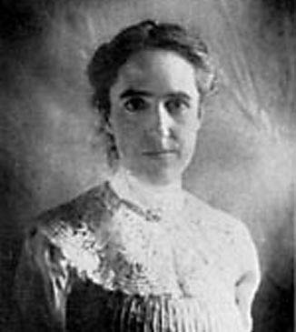
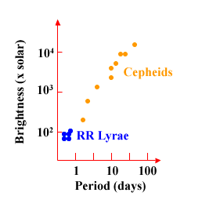

Cepheid variable stars were named after the first of their kind observed, δ Cepheus. There are actually two classes of Cepheid: Type I Cepheids (δ Cepheus is a classical Cepheid) are population I stars with high metallicities, and pulsation periods generally less than 10 days. Type II Cepheids (W Virginis stars), are low-metallicity, population II stars with pulsation periods between 10 and 100 days. All Cepheids are luminous, yellow, horizontal branch stars that lie in the instability strip of the Hertzsprung-Russell diagram. Instabilities which cause their size and temperature to change give rise to the periodic variations in their luminosity.

Credit: Courtesy of AAVSO

In 1907, Henrietta Leavitt discovered that Cepheid variable stars in the Small Magellanic Cloud pulsated at a rate which depended solely on their absolute magnitude. This period-luminosity relationship (shown right) allows Cepheids to be used as standard candles (once the pulsation period is known) to estimate distances to the objects in which they are located. In fact, Cepheid variable stars formed the first non-direct method of distance determination, and established the first rung of the distance ladder. All subsequent rungs in the ladder use Cepheid distances as a stepping stone.
In the 1920s, Edwin Hubble used variable stars to measure distances to nearby galaxies. At the time it was thought that all of these variables were Type I Cepheids, but in reality the sample also included RR Lyrae and W Virginis stars. Although each of these stellar types possesses a different period-luminosity relationship, Hubble was able to determine that the Universe was expanding, though his estimate of the rate of expansion (called the Hubble constant in his honour) was almost a factor of 10 times larger than the value accepted today.